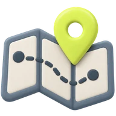
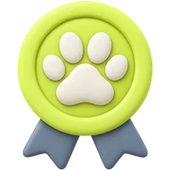

Карта случаев
Случаи пропажи и помощи рядом с вами: можно проверить, нет ли поблизости хозяина с подходящим
объявлением, сравнить карточки или самому поехать на помощь. На карте только то, что отмечено
местом и подтверждено фото, видео или панорамой 360.

База знаний
Больше двадцати памяток на одну-две минуты чтения. Работают офлайн — открываются даже тогда,
когда нет сети.
Нашли животное. С чего начать?
Вижу травму. Что дальше?
Кошка во дворе — потерялась?
Дикое животное рядом

ID-слепок носа и мордочки
Нос собаки уникален, у кошки — черты мордочки. По снимкам собирается слепок признаков,
который можно сверить с объявлениями. Это не биометрическая идентификация: совпадение
нужно проверять отдельно. Если животное напугано или ранено, скан пропускают.

Награда за вашу помощь
Уровень растёт вместе с добрыми делами. Скаут поддерживает на разных этапах — благодарит
и отмечает подтверждённые случаи. Наград за рискованные действия нет.
 Подхват
Подхват
 Круглосуточно
Круглосуточно
 Без точного адреса
Без точного адреса